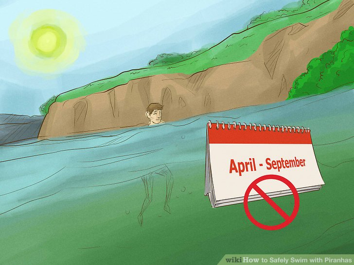

South America (although occasionally a stray pet piranha turns up in a river
elsewhere). Residing almost exclusively in still or slow-moving streams or lakes,
they usually die in cold water.

Avoid swimming with piranhas in the dry season. Piranhas are usually
mild-mannered and skittish. They rarely, if ever, attack a much larger animal unless they
are starving. Food supplies are at their lowest during the dry season (which lasts from
around April to September) when water levels fall dramatically and food is less plentiful,
so avoid entering piranha-infested waters during these times.
- If you're in doubt about whether the dry season is still underway,
ask local residents if it's safe to swim.
- Be wary of ponds that seem to be a product of the movements of a
river. Rivers slowly move back and forth and often shrink and grow
with the rain, leaving temporary ponds behind. Fish in these waters
are isolated from other water sources and are essentially
condemned to death; they could jump and attack you out of sheer
desperation if you stand close enough.
Wait until night to enter the water. If, during the dry season, you must venture into
water inhabited by piranhas, wait until darkness before attempting to traverse without a
boat. Piranhas hunt in the day and sleep at night.
- If awakened from their slumber while it's dark, piranhas will
generally flee, but it's safest not to disturb them. - Remember that other predators, such as caimans, are more active
at night. If attempting to cross a waterway with a diversity of
organisms, the dangers of traveling at night may far outweigh the
benefits.
Stay out of the water if you have an open, bleeding cut. Piranhas sense blood in
the water and are more likely to attack a larger animal if they think it's wounded.
- You should also avoid carrying raw meat into the water, and wash your
hands before entering if you have recently handled raw meat. (Don't
wash where piranhas reside). - Steer clear of waters below bird nesting areas, docks where fish are
gutted, and garbage dumps; you don't want the piranhas to associate you
with the blood that could come from these sources.
Avoid making a fuss. Recent studies suggest that desperate piranhas are attracted
more by activity than by blood. When crossing water, minimize your movement and
swim or walk with smooth, fluid motions. Avoid talking, and don't use flashlights or
lanterns when night-crossing.

Create a diversion. As a last-ditch effort, try to create a diversion by releasing an
animal carcass or a substantial quantity of raw meat downstream from your desired
crossing point. Should such action become necessary, keep in mind that piranhas can
strip animals to the bone in a matter of minutes or even seconds, so you'll want to cross
very quickly before they sense you.